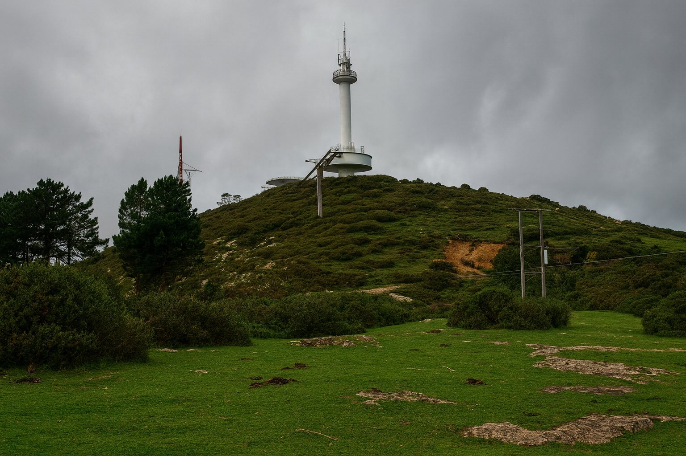
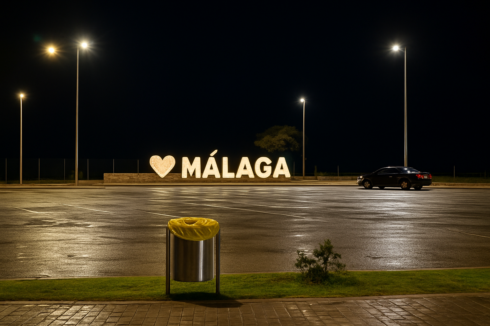
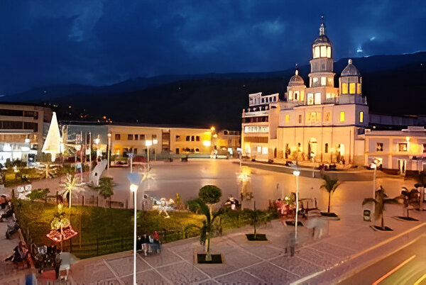
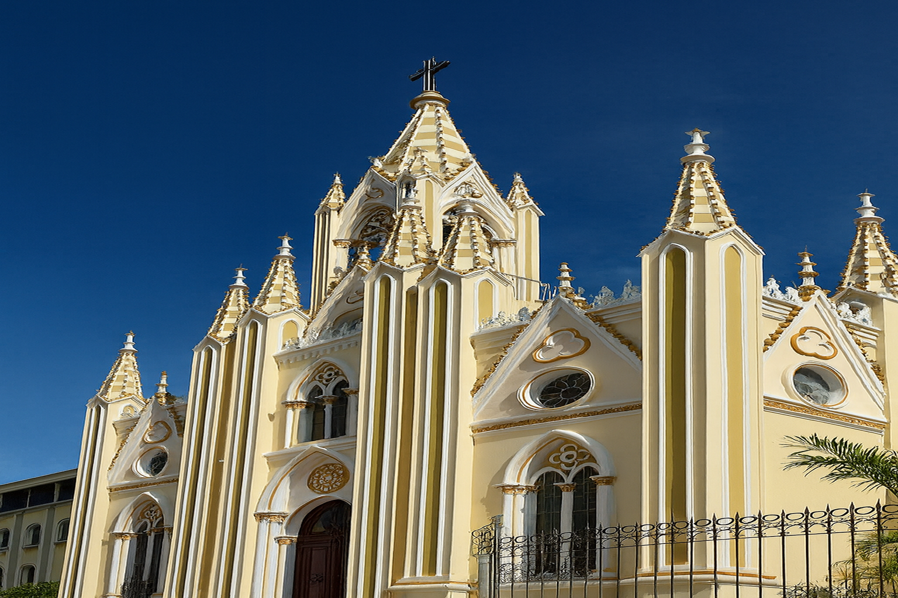

Sitios Turísticos de Málaga

Peña del cabro
Uno de los miradores más conocidos de Málaga, ideal para fotos y disfrutar del paisaje.

ALAMEDA
El corazón del municipio, rodeado de comercio y arquitectura tradicional.

Catedral de Málaga
Una iglesia histórica que representa el patrimonio cultural de la región.

Asilo San Antonio
El Asilo San Antonio es un lugar donde la vida se cuida con amor.